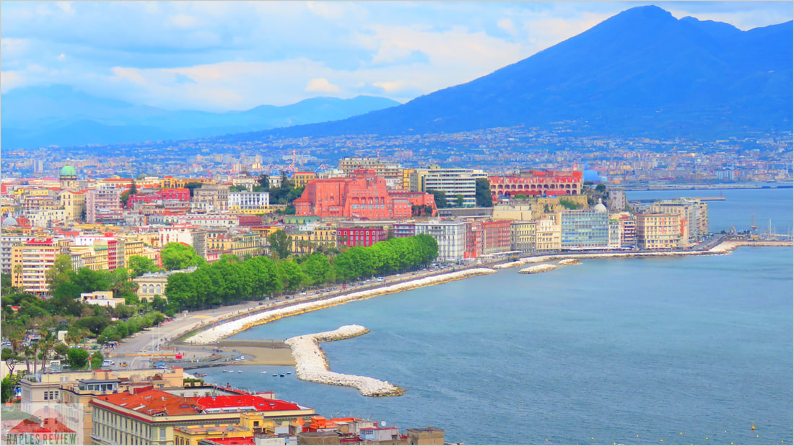
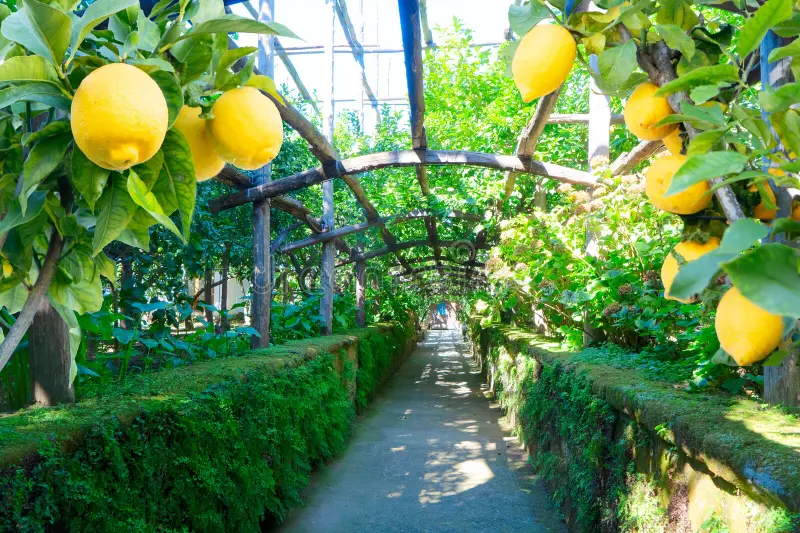

1. Paseo por el Lungomare y los Acantilados
El famoso paseo marítimo ofrece vistas impresionantes del Golfo de Nápoles y el Vesubio. Caminar por aquí al atardecer es una de las experiencias más románticas de Sorrento.
La Perla de la Costa Amalfitana • Italia
Limoneros, acantilados y vistas inolvidables al Golfo de Nápoles
Sorrento es una de las ciudades más encantadoras del sur de Italia. Con su clima mediterráneo, aroma a limones, calles históricas y vistas espectaculares al Vesubio y a la isla de Capri, es el punto de partida ideal para explorar la Costa Amalfitana.

El famoso paseo marítimo ofrece vistas impresionantes del Golfo de Nápoles y el Vesubio. Caminar por aquí al atardecer es una de las experiencias más románticas de Sorrento.

El corazón de Sorrento. Esta animada plaza está dedicada al poeta Torquato Tasso. Rodeada de cafés, restaurantes y tiendas, es el lugar perfecto para observar la vida local.
No te pierdas el atardecer desde el mirador cercano a la plaza.

La catedral de Sorrento, dedicada a los Santos Felipe y Santiago, destaca por su hermoso campanario y su interior de estilo barroco. Merece una visita tranquila.

Sorrento es famosa mundialmente por sus limones grandes y aromáticos. Visita un jardín de limoneros o una fábrica artesanal de limoncello para aprender cómo se elabora este famoso licor italiano.

Dos puertos encantadores. Marina Piccola es más turística con restaurantes y lanchas que salen hacia Capri y Positano. Marina Grande conserva más el ambiente pesquero tradicional.

Un hermoso claustro del siglo XIV con arcos árabe-normandos y un jardín interior lleno de paz. Es uno de los rincones más fotogénicos de la ciudad.

Perderse por las estrechas calles del centro histórico es un placer. Encontrarás talleres de artesanos, tiendas de cerámica, boutiques y el delicioso aroma a limón y albahaca.
“Sorrento te conquista con su luz, su aroma a limón y sus vistas al mar que parecen pintadas.”

El plato más icónico de Sorrento. Linguine o spaghetti con una cremosa salsa de limones locales, mantequilla, parmesano y un toque de albahaca. Fresco y muy aromático.

Ñoquis de patata con salsa de tomate fresca, mozzarella derretida y abundante albahaca. Un clásico reconfortante de la región.

Sorrento ofrece excelentes mariscos. Prueba el risotto ai frutti di mare, los spaghetti con almejas (vongole) o el pescado del día a la parrilla con limón.

Tomates jugosos, mozzarella de búfala fresca, albahaca y aceite de oliva extra virgen. Un entrante simple pero lleno de sabor.

Prueba la famosa **Delizia al Limone**, el sorbete de limón, la torta caprese o el babà al limoncello. Todo elaborado con los intensos limones de la zona.
Los mejores restaurantes se encuentran alrededor de Piazza Tasso, en el centro histórico y cerca de Marina Grande. Reserva con anticipación en temporada alta. No olvides terminar tu comida con un vaso de limoncello bien frío.